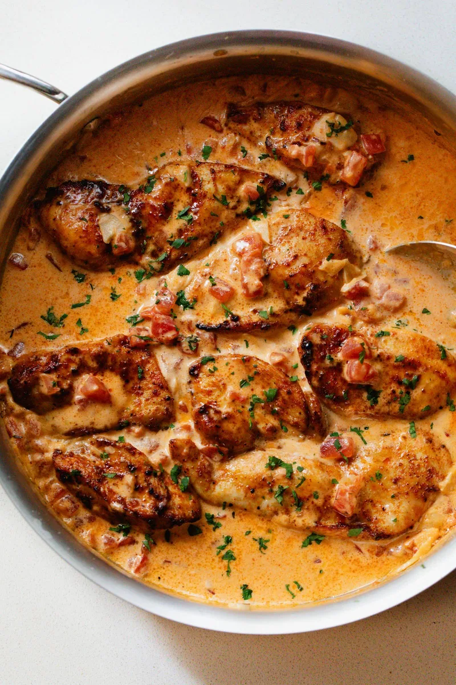

Chicken

Description
Golden, juicy chicken coated in a simple creamy sauce with tomatoes, garlic, and thyme.
Ingredients
- Chicken
- Garlic
- Petite Tomatoes
- Butter
- Tomato Paste
- Cream
- Broth
- Thyme
Steps
- Air Fry the Chickens
- Thinly sliced some garlic
- Drain the Petite diced Potatoes
- Get the Garlic, Butter, Tomato Paste over the low heat to develop some flavor
- Add Cream, Broth, And Thyme. Whisk and then let it all simmer up for a while so it can thicken into a nice sauce.
- Add Chicken, And Tomatoes. Pull out the sprigs of thyme and get your tomatoes in the sauce. Finally, tuck those gorgeous pieces of chicken into the whole thing.
- Now its done
Home